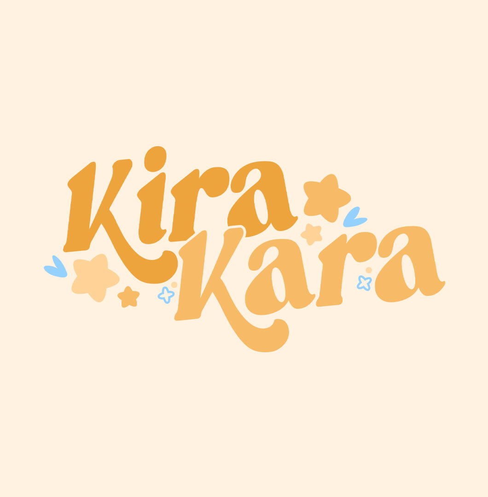

-
Conheça a Kira Kara
A Kira Kara é um grupo Vtuber indie brasileiro criado em 23 de fevereiro de 2022, atualmente composto por cinco integrantes: Sunny Seiki, Pamytube, Ynasshi, Yume Matsu, e Hanako Awing.
Com conteúdos divertidos e variados, buscamos expandir o universo Vtuber no Brasil e nos conectar com o público de forma autêntica e inovadora.
Em nossa trajetória, já realizamos diversos projetos marcantes e estamos sempre em busca de novas colaborações para continuar crescendo.
Confira também nossas redes sociais abaixo para saber mais.
- 